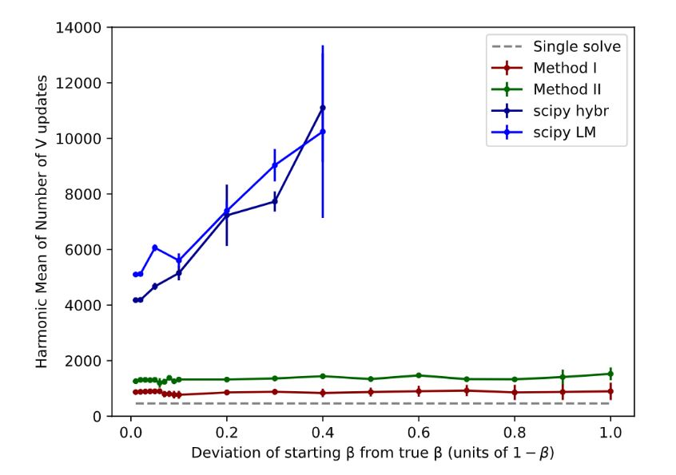
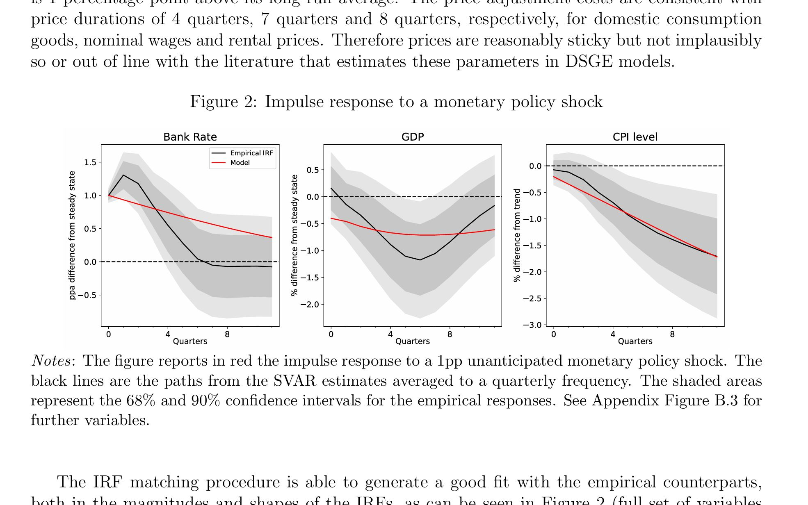
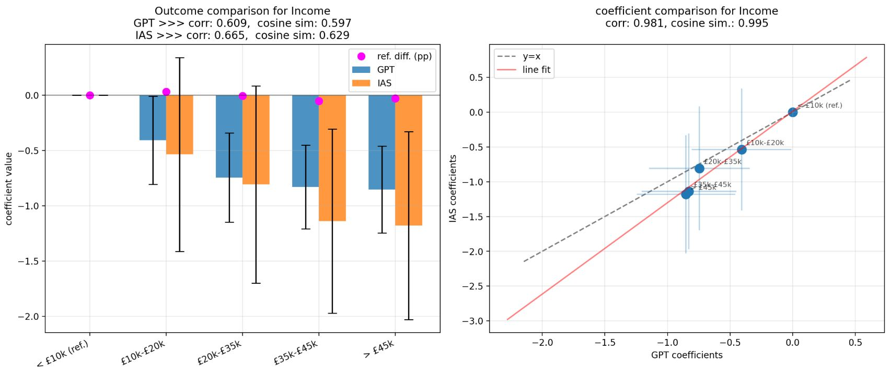
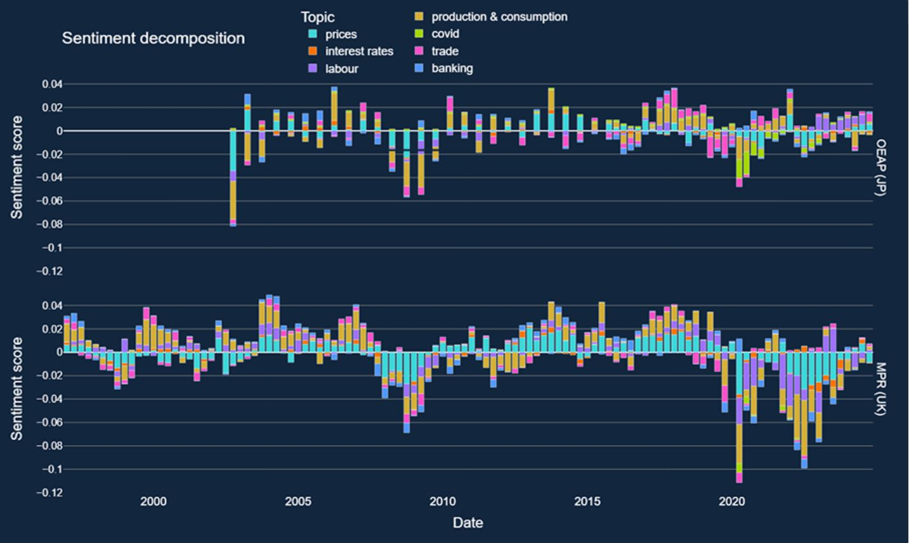
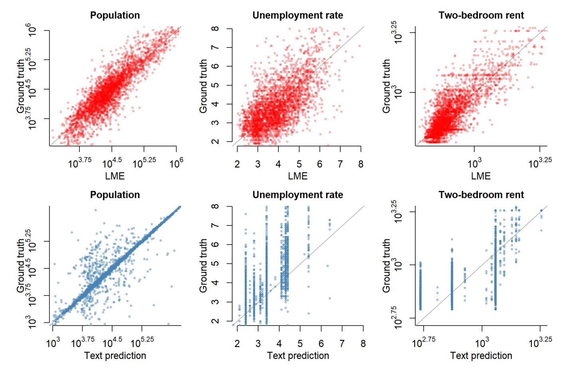
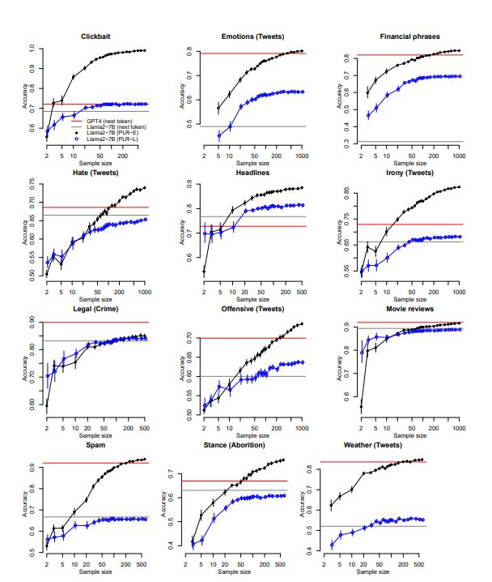
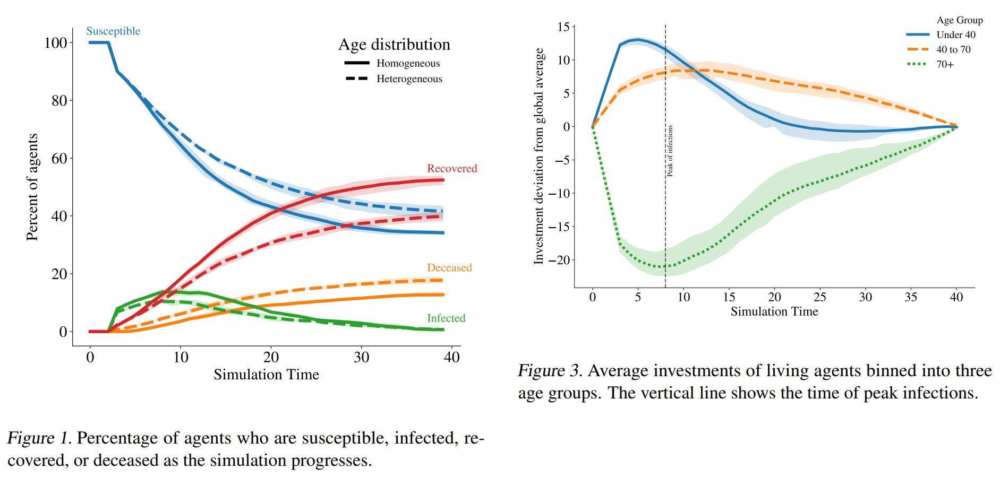

Ed Hill
Senior Research Data Scientist | Advanced Analytics | Bank of England
Slides, work-in-progress

Efficient Parameter Estimation via Partial Convergence. Standard optimisation routines struggle with these problems due to a costly-to-evaluation function to be optimised, a globally OK-behaved but locally discontinuous optimisation surface, and an increasing dimensionality of targets and domain. We improve in both the number of function evaluations and stability, and demonstrate the methods on smooth and jumpy surfaces.
Recent Papers
See Google Scholar for a full list of publications.

We develop a medium‑scale Heterogeneous Agent New Keynesian (HANK) model tailored to the UK, featuring rich household heterogeneity alongside detailed housing, international, and fiscal blocks. The model generates realistic income and wealth distributions as well as marginal propensities to consume consistent with UK evidence. We use the model to decompose monetary transmission into its key transmission channels and assess their relative importance. We then demonstrate the model’s versatility through several policy‑relevant applications.

This paper investigates the ability of Large Language Models (LLMs), specifically GPT-3.5-turbo (GPT), to form inflation perceptions and expectations based on macroeconomic price signals. We compare the LLM's output to household survey data and official statistics, with our quasi-experimental design exploiting the timing of GPT's training cut-off in September 2021 which means it has no knowledge of the subsequent UK inflation surge. A novel Shapley value decomposition of LLM outputs suited for the synthetic survey setting provides well-defined insights into the drivers of model outputs linked to prompt content.

Modern language models are powerful tools: but how can we use them in economic policymaking? We propose decomposing the metrics which Large Language Models (LLMs) can derive from text data to offer insights from large collections of documents in a highly interpretable format. This approach aims to bridge the gap between natural language processing (NLP) techniques and economic decision-making, offering a richer, more context-aware understanding of complex economic phenomena.

We investigate whether the hidden states of large language models (LLMs) can be used to estimate and impute economic and financial statistics. Focusing on county-level (e.g. unemployment) and firm-level (e.g. total assets) variables, we show that a simple linear model trained on the hidden states of open-source LLMs outperforms the models' text outputs. This suggests that hidden states capture richer economic information than the responses of the LLMs reveal directly.

For simple classification tasks, we show that users can benefit from the advantages of using small, local, generative language models instead of large commercial models without a trade-off in performance or introducing extra labelling costs. Through experiments on 17 sentence classification tasks (2-4 classes), we show that penalised logistic regression on the embeddings from a small LLM equals (and usually betters) the performance of a large LLM in the "tens-of-shot" regime.
Once the stuff of science fiction, quantum technologies are advancing fast. Individual quantum computers are finding a range of applications, primarily driven by the immense speed-ups they offer over normal computers. This blog post starts to think about what this new interconnected quantum world means for the financial system. What could the first 'quantum markets' look like?

General equilibrium macroeconomic models are a core tool used by policymakers to understand a nation's economy. We use techniques from reinforcement learning to solve such models incorporating heterogeneous agents in a way that is simple, extensible, and computationally efficient. The COVID-19 pandemic has highlighted the importance of heterogeneity in macroeconomic outcomes and the need for models that can more easily incorporate it.
Current Projects
Language Models
Evaluating RAG
with Tunrayo AdelekeLarodo, Matthew Leong and Supachai Saengthong
LLMs are great for researching and finding information – looking at documents directly, or quickly summing up tens of thousands of words of search results (this is "RAG") – but how do we know they're doing it well? Are their answers accurate? Have they captured everything?
Looking at the evaluation of knowledge extraction and synthesis frameworks in general, and RAG in particular, using GRACE – a multi-agent RAG framework – for research and deployment. We are looking at systematic evaluation of the novel features of GRACE and comparison to similar systems, and at how evaluation at a query level can be performed and played back to the user. Focussing on economic and prudential data.
Enhancing BM25-based search
The BM25 method has been around about 50 years now but is still a great way to find information – basically like doing Ctrl+F, but with corrections such as weighting towards rarer words. It's fast, robust and explainable – how can we make it better?
GRACE uses search techniques which extend BM25. A baseline BM25 (Lucene, with stemming) benefits from low import times and good performance – particularly with rare or domain specific words. This work looks at domain specific query expansion, particularly for providing context for RAG, so evaluation of it overlaps with the work above.
Word embeddings as fixed points
Word embeddings represent words as vectors of numbers, where the relative positions of those vectors have meaning. There are now much more sophisticated ways of representing words in context within a sentence, so results won't be state-of-the-art, but it's interesting to look at how representations are formed, and novel ways of doing that.
Finding word embeddings as fixed points of forward mappings – explicitly, defining simple forward mapping to a word from its neighbours, with negative sampling becoming orthonormalization. Usefulness of this (it needs little data), quality and flavour of the embeddings (word level and on MTEB – some capture semantic features and others achieve the aim of being more like dependency-based ones), and links to the query expansion above. I'm also interested in lightweight, and training free, attention.
Understanding Monetary Policy Uncertainty
with Carlos Canon Salazar, and Wonwoo Bae, Shinpei Nakamura and Chris Wu at Yale
Macroeconomic Modelling
A Hybrid Deep Reinforcement Learning approach to global HA model solutions
with Jamie Lenney
A scheme allowing non-linear solutions to complex (e.g. discrete choice) HA models under aggregate shocks.
Previous Work
Prior to my current role at the Bank of England (2019-), I co-founded Count (count.co, 2016-19), was a PhD student, post-doc and research fellow in the Plasma Physics Group at Imperial College, London (2007-16), and did the Maths Tripos at Trinity College, Cambridge (2003-07).
See Google Scholar for my publications. LinkedIn. I enjoy running, playing the piano and learning languages.